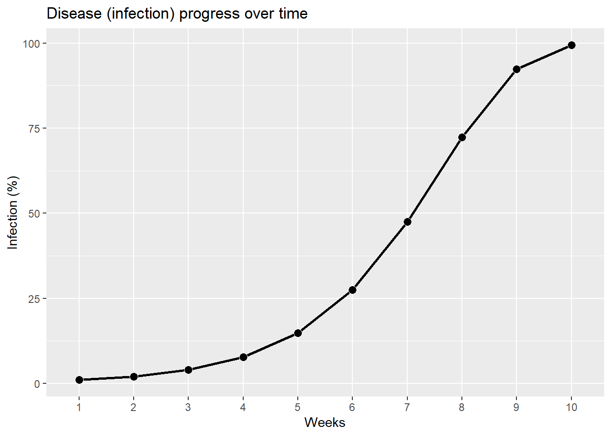
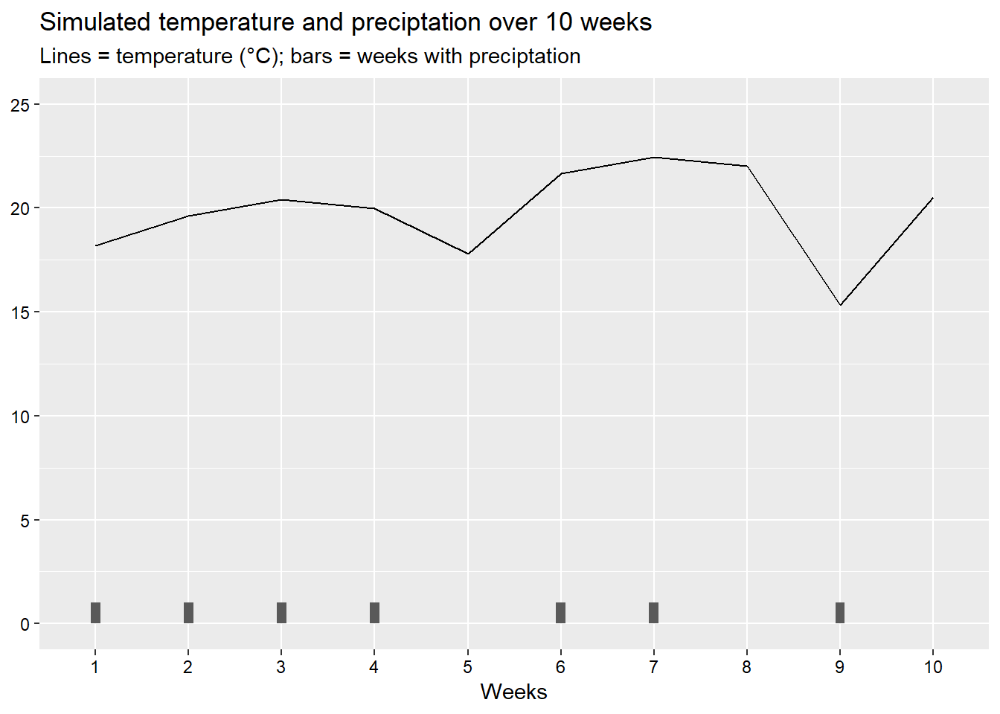
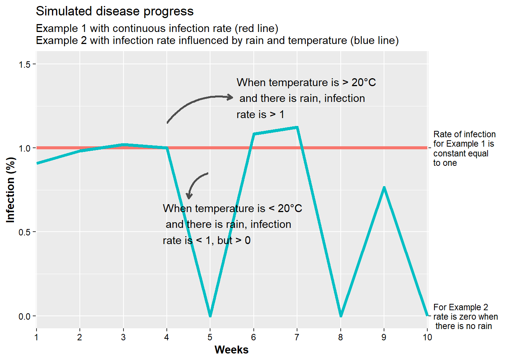
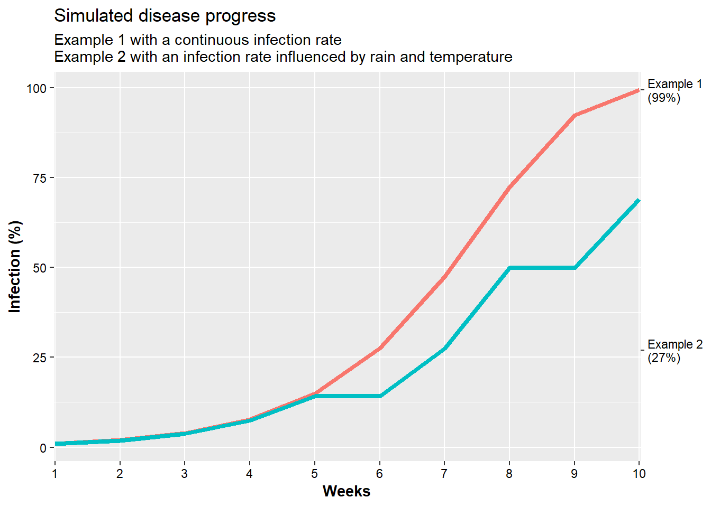
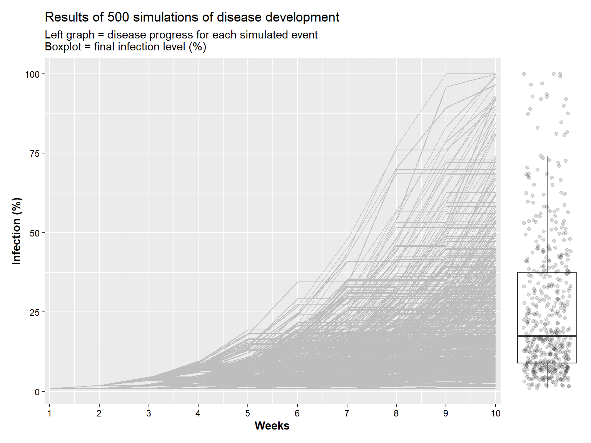
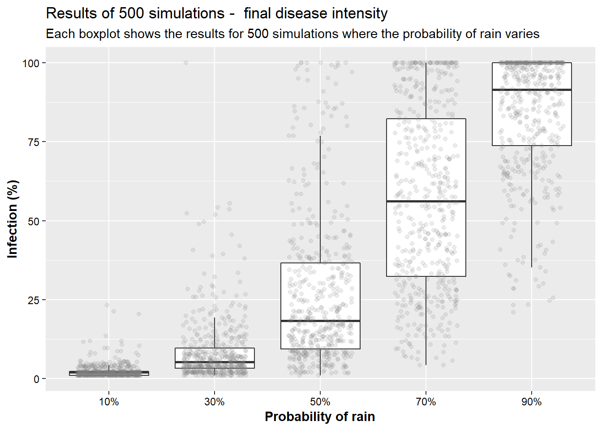
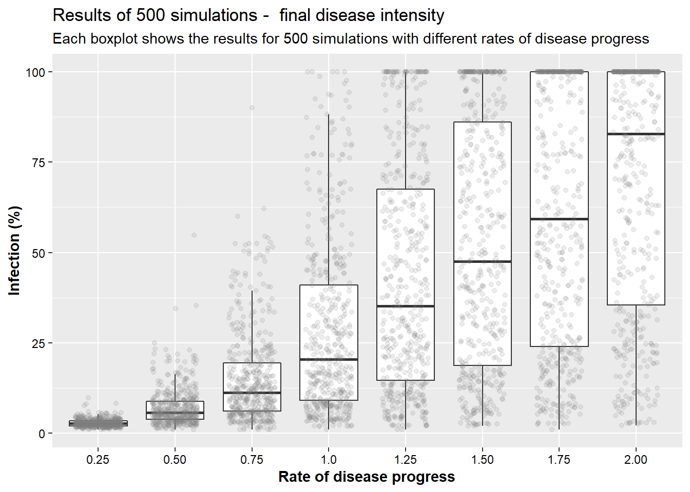
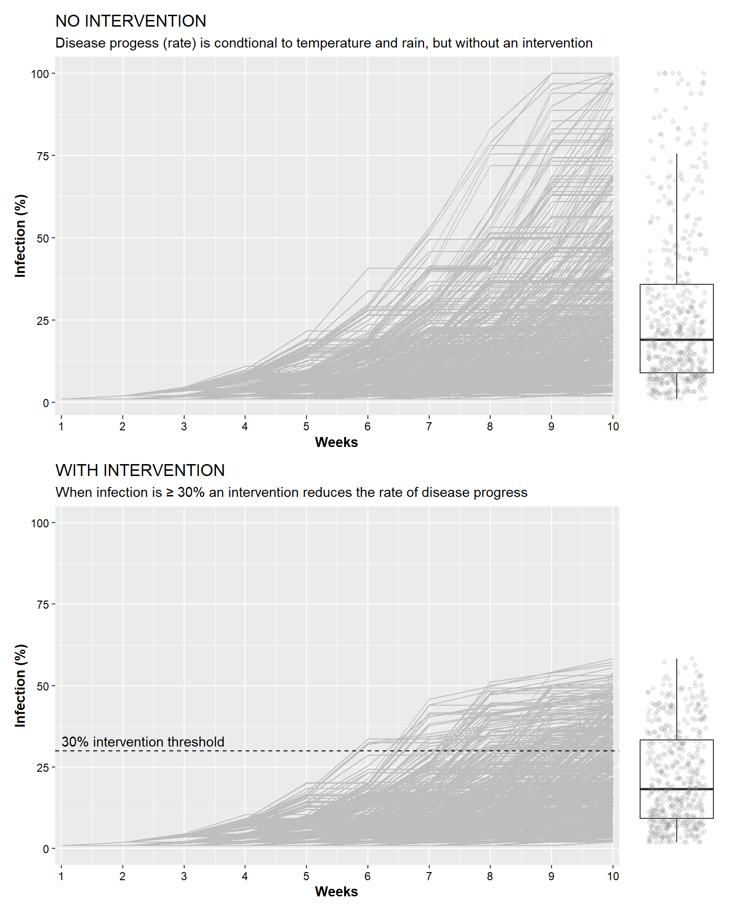
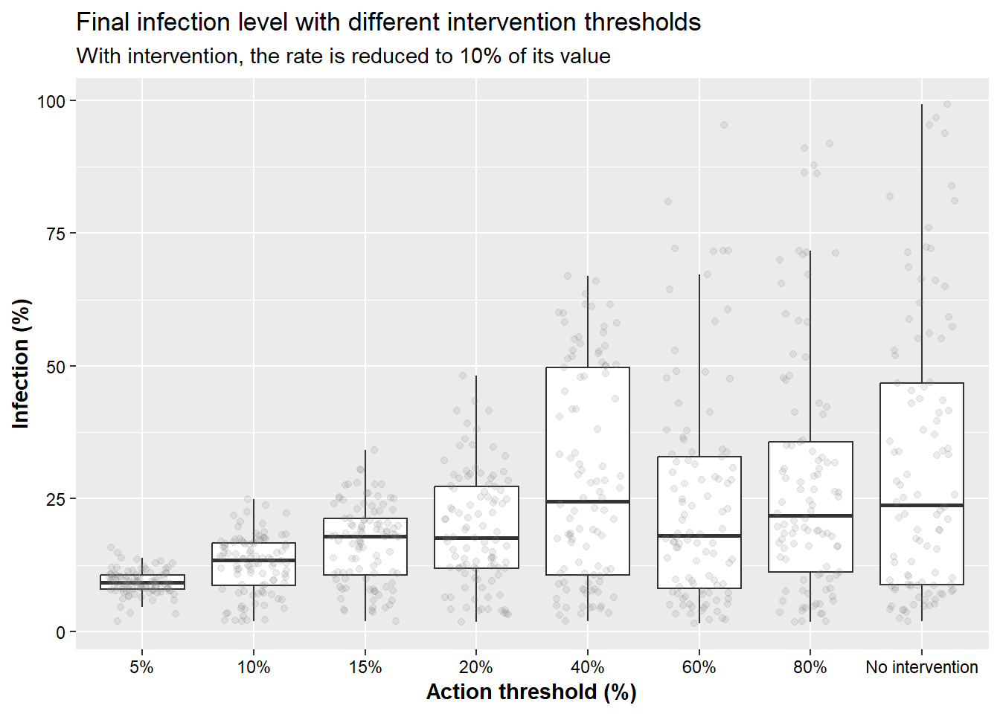

In this exercise, a few examples of disease forecasting and decision support systems will be shown based on specific weather conditions and intervention thresholds. While disease forecasting uses several different tools for model development, validation, and application, the generic system shown in this activity is based on modeling disease infection rate conditional on a combination of temperature, rainfall, and the level of infection.
First, let’s start with a simple disease infection progress curve. The rate here in unconditional, meaning that it does not matter on any weather parameters which could affect the rate of disease development. As such, disease progress will always develop at that the same rate.
# Load packages
library(tidyverse)
library(purrr)
library(patchwork)
# First, we will create a matrix of 10 x 1 (= 10 rows x 1 column). For this exercise, assume that each row represents a "weekly" time interval
examp_1 <- data.frame(p_inf_1 = c(1, rep(0,9)))
# Replace the first cell of the column from 0 to 1
# Set the rate parameter to 1
rate <- 1
# Simulate the disease infection for another 9 weeks based on a logistic growth model (week one is set to 1% based on the initial infection size)
for (j in 2:10) {
examp_1[j,] <- examp_1[j-1,] * (1 + rate*(1 - examp_1[j-1,]/100))
}
examp_1$weeks <- 1:10
examp_1 %>% mutate(weeks = as.factor(weeks)) %>%
ggplot(aes(x = weeks, y = p_inf_1, group = 1))+
geom_line(size = 1)+
geom_point(shape = 21, color = "white", fill = "black", size=3)+
labs(y = 'Infection (%)',
x = "Weeks",
title = "Disease (infection) progress over time")
Now, the idea will be explore disease development considering that the rate of disease progress is conditional on specific weather parameters. For this example, rainfall and temperature will be considered.
To start, we will create a dataset of 10 weeks and explore how precipitation and temperature modifies disease development.
set.seed(441909) # Used to make the example reproducible
weather <- data.frame(weeks = 1:10,
rain = rbinom(n=10,size=1,prob=.5), # rainfall is considered as a random sample from the binomial distribution
temp = 20+rnorm(n=10,mean=0,sd=2)) # 20 = baseline temperature; create a random sample from a normal distribution
weather %>%
mutate(weeks = factor(weeks)) %>%
ggplot(aes(x = weeks, group = 1)) +
geom_line(aes(y = temp)) +
geom_col(aes(y = rain), width = .1) +
scale_y_continuous(limits = c(0,25), breaks = seq(0,25,5)) +
labs(title = "Simulated temperature and preciptation over 10 weeks",
subtitle = "Lines = temperature (°C); bars = weeks with preciptation",
y = NULL,
x = "Weeks")+
theme(axis.text = element_text(colour = "black"))
Now, we explore what occurs when disease development (and disease progress) requires very specific conditions. Here, disease will progress only in the weeks where precipitation occurs. Furthermore, when the temperature is below 20°C, the rate of disease progress will be reduced (slower disease development), while when the temperature is greater than this threshold, disease intensity will increase.
examp_2 <-
weather %>%
# Assume infection occurs only when there is rain,
# and when the temperature > 20C, infection and disease will increase
mutate(rate_2 = rate * rain * (1 + (temp - 20)/20)) %>%
mutate(p_inf_2 = c(1, rep(0,9))) # just to open a new column
for (j in 2:10) {examp_2$p_inf_2[j] <- examp_2$p_inf_2[j-1] *
(1 + examp_2$rate_2[j-1]*(1 - examp_2$p_inf_2[j-1]/100))}
examp_2## weeks rain temp rate_2 p_inf_2
## 1 1 1 18.19270 0.9096349 1.000000
## 2 2 1 19.63450 0.9817252 1.900539
## 3 3 1 20.39448 1.0197241 3.730885
## 4 4 1 19.99447 0.9997237 7.393417
## 5 5 0 17.78042 0.0000000 14.238316
## 6 6 1 21.67340 1.0836700 14.238316
## 7 7 1 22.45274 1.1226368 27.471033
## 8 8 0 22.02992 0.0000000 49.838961
## 9 9 1 15.31925 0.7659626 49.838961
## 10 10 0 20.50238 0.0000000 68.987827Compare the plots between the rate of disease infection for unconditional and conditional rate situations.
data_inf <- left_join(examp_1, examp_2) %>%
mutate(rate_1 = 1,
weeks = factor(weeks)) %>%
select(weeks, p_inf_1, p_inf_2, rate_1, rate_2)
pivot_longer(data_inf, cols = c(rate_1, rate_2), names_to = "Rate_Perc") %>%
ggplot(., aes(x=weeks, y = value, color = Rate_Perc, group = Rate_Perc))+
geom_line(size = 1.5)+
scale_y_continuous(limits = c(0,1.5), sec.axis = sec_axis(~.*1, breaks = c(0, 1),
labels = c("For Example 2 \nrate is zero when \n there is no rain",
"Rate of infection \nfor Example 1 is\nconstant equal\nto one")))+
scale_x_discrete(expand = c(0,0.02))+
labs(x = "Weeks", y = "Infection (%)",
title = "Simulated disease progress",
subtitle = "Example 1 with continuous infection rate (red line) \nExample 2 with infection rate influenced by rain and temperature (blue line)")+
theme(
legend.position = "none",
axis.text = element_text(color="black"),
axis.title = element_text(face="bold"))+
# Annotation for temp >20C
annotate(geom = "curve", x = 4, y = 1.15, xend = 5.5, yend = 1.3,
curvature = -.3, arrow = arrow(length = unit(2, "mm")), size = 1, color = "grey30") +
annotate(label = "When temperature is > 20°C\n and there is rain, infection\nrate is > 1",
geom = "text", x = 5.6, y = 1.3, hjust = "left")+
# Annotation for temp <20C
annotate(geom = "curve", x = 4.95, y = .85, xend = 4.5, yend = 0.7,
curvature = .35, arrow = arrow(length = unit(2, "mm")), size = 1, color = "grey30") +
annotate(label = "When temperature is < 20°C\n and there is rain, infection\nrate is < 1, but > 0",
geom = "text", x = 3.9, y = .55, hjust = "left") 
Now, we will use this information see how disease (infection) progress is impacted.
data_inf <- left_join(examp_1, examp_2) %>%
mutate(rate_1 = 1,
weeks = factor(weeks)) %>%
select(weeks, p_inf_1, p_inf_2, rate_1, rate_2)
pivot_longer(data_inf, cols = c(p_inf_1, p_inf_2), names_to = "Inf_Perc") %>%
ggplot(., aes(x=weeks, y = value, color = Inf_Perc, group = Inf_Perc))+
geom_line(size = 1.5)+
scale_y_continuous(sec.axis = sec_axis(~.*1,
breaks = c(27, 99.4),
labels = c("Example 2\n(27%)", "Example 1\n(99%)")))+
scale_x_discrete(expand = c(0,0.02))+
labs(x = "Weeks", y = "Infection (%)",
title = "Simulated disease progress",
subtitle = "Example 1 with a continuous infection rate \nExample 2 with an infection rate influenced by rain and temperature")+
theme(
legend.position = "none",
axis.text = element_text(color="black"),
axis.title = element_text(face="bold"))
Obviously, weather conditions change, which also influences how we try to forecast disease development. To explore this concept, we will simulate different scenarios to see how changes in weather affect disease development. In this initial example, we will simulate conditions using 500 scenarios.
# Create a function to simulate multiple scenarios
discast <- function(rate,nweeks,start,rprob){
# rate is the increase in disease under conducive conditions
# nweeks is the number of weeks considered
# start is the starting infection percentage
# rprob is the probability of rain in any given week
perinf <- data.frame(p_inf = rep(0,nweeks),
rain = rbinom(n=nweeks,size=1,prob=rprob),
temp = rep(0,nweeks))
perinf[1,1] <- start
perinf[1,3] <- 20
# Here we use a little more complex simulation for temperature, considering that each day is not independent,
# but rather a random sample considering the temperature from the day before
for(j in 2:nweeks){
perinf$temp[j] <- perinf$temp[j-1] + rnorm(n=1,mean=0,sd=2) }
# Generate the time series of rates
perinf <-
mutate(perinf, temp = if_else(temp<0,0,temp)) %>% # To avoid problem with negative temp
mutate(rate = rate * rain * (1+(temp - 20)/20))
for (j in 2:10) {perinf$p_inf[j] <- perinf$p_inf[j-1] *
(1 + perinf$rate[j-1]*(1 - (if_else(perinf$p_inf[j-1]>=100, 1, perinf$p_inf[j-1]/100))))
perinf <- mutate(perinf, week = 1:nweeks,
p_inf = if_else(p_inf>=100, 100, p_inf))
}
perinf
}
# Using functions from the purrr package, we will simulate multiple scenarios
n_simu <- 500 # Number of simulations
simul_1 <- map(seq_len(n_simu), ~discast(rate=1,nweeks=10,start=1,rprob=.5)) %>%
map2(., 1:n_simu, ~cbind(.x, RUN = .y)) %>% bind_rows()
head(simul_1)## p_inf rain temp rate week RUN
## 1 1.000000 1 20.00000 1.000000 1 1
## 2 1.990000 1 23.47445 1.173723 2 1
## 3 4.279227 0 21.78612 0.000000 3 1
## 4 4.279227 0 24.50572 0.000000 4 1
## 5 4.279227 0 22.57159 0.000000 5 1
## 6 4.279227 1 24.39046 1.219523 6 1tail(simul_1)## p_inf rain temp rate week RUN
## 4995 3.272785 1 14.87076 0.7435380 5 500
## 4996 5.626583 1 15.32026 0.7660128 6 500
## 4997 9.694110 0 14.80263 0.0000000 7 500
## 4998 9.694110 1 15.55531 0.7777655 8 500
## 4999 16.502943 0 16.10970 0.0000000 9 500
## 5000 16.502943 1 16.29779 0.8148894 10 500Visually, here is how the plot of the different scenarios.
a <- ggplot(simul_1) +
geom_line(aes(x= week, y = p_inf, color = RUN, group = RUN), color = "grey")+
labs(x = "Weeks", y = "Infection (%)",
title = "Results of 500 simulations of disease development",
subtitle = "Left graph = disease progress for each simulated event\nBoxplot = final infection level (%)")+
scale_x_continuous(breaks = 1:10, expand = c(0.0,0.1))+
theme(
legend.position = "none",
axis.text = element_text(color="black"),
axis.title = element_text(face="bold"))
b <- filter(simul_1,week == 10) %>%
ggplot(aes(x= week, y = p_inf)) +
geom_boxplot(outlier.alpha = 0)+
geom_jitter(alpha = 0.15, width = 0.3)+
theme(
panel.background = element_blank(),
axis.title = element_blank(),
axis.text = element_blank(),
axis.ticks = element_blank())
a+ b +
plot_layout(
ncol = 2,
widths = c(7, 1) ) 
Since the rate is conditional on weather conditions, we will simulate how a change in the probability of rain will change disease (infection) progress. Below, we will create a series of plots showing final disease (infection at week 10) intensity based on 500 simulation for each situation. The first scenario shows 500 simulations when there is a 10% probability of rain each each week, the second box 30%, followed by 50%, 70%, and 90%, respectively. This example illustrates the importance of rain on disease development.
# Each overall scenario changes the probability of rain
# Number of simulations
n_simu <- 500
simul_01 <- map(seq_len(n_simu), ~discast(rate=1,nweeks=10,start=1,rprob=.1)) %>%
map2(., 1:n_simu, ~cbind(.x, RUN = .y)) %>% bind_rows() %>%
mutate(prob= "p01")
simul_03 <- map(seq_len(n_simu), ~discast(rate=1,nweeks=10,start=1,rprob=.3)) %>%
map2(., 1:n_simu, ~cbind(.x, RUN = .y)) %>% bind_rows() %>%
mutate(prob= "p03")
simul_05 <- map(seq_len(n_simu), ~discast(rate=1,nweeks=10,start=1,rprob=.5)) %>%
map2(., 1:n_simu, ~cbind(.x, RUN = .y)) %>% bind_rows() %>%
mutate(prob= "p05")
simul_07 <- map(seq_len(n_simu), ~discast(rate=1,nweeks=10,start=1,rprob=.7)) %>%
map2(., 1:n_simu, ~cbind(.x, RUN = .y)) %>% bind_rows() %>%
mutate(prob= "p07")
simul_09 <- map(seq_len(n_simu), ~discast(rate=1,nweeks=10,start=1,rprob=.9)) %>%
map2(., 1:n_simu, ~cbind(.x, RUN = .y)) %>% bind_rows() %>%
mutate(prob= "p09")
bind_rows(simul_01, simul_03, simul_05, simul_07, simul_09) %>%
filter(week==10) %>%
ggplot(aes(x= prob, y = p_inf)) +
geom_boxplot(outlier.alpha = 0)+
geom_jitter(alpha = 0.15, width = 0.3, color="grey50")+
labs(x = "Probability of rain", y = "Infection (%)",
title = "Results of 500 simulations - final disease intensity",
subtitle = "Each boxplot shows the results for 500 simulations where the probability of rain varies")+
scale_x_discrete(labels = c("10%", "30%", "50%", "70%", "90%"))+
theme(
legend.position = "none",
axis.text = element_text(color="black"),
axis.title = element_text(face="bold"))
Now, in the next scenario, we will explore how the initial disease infection rate affects final disease intensity. As we have seen in earlier topics, the rate of disease infection can be affected by different factors. For example, the use of genetic resistance or through adoption of cultural practices that do not favor disease development. The goal is to see how affecting the rate drives the overall epidemic.
# Change the rate of disease increase
simul_025 <- map(seq_len(n_simu), ~discast(rate=.25,nweeks=10,start=1,rprob=.5)) %>%
map2(., 1:n_simu, ~cbind(.x, RUN = .y)) %>% bind_rows() %>%
mutate(prob= "r_025")
simul_050 <- map(seq_len(n_simu), ~discast(rate=.5, nweeks=10,start=1,rprob=.5)) %>%
map2(., 1:n_simu, ~cbind(.x, RUN = .y)) %>% bind_rows() %>%
mutate(prob= "r_050")
simul_075 <- map(seq_len(n_simu), ~discast(rate=.75,nweeks=10,start=1,rprob=.5)) %>%
map2(., 1:n_simu, ~cbind(.x, RUN = .y)) %>% bind_rows() %>%
mutate(prob= "r_075")
simul_100 <- map(seq_len(n_simu), ~discast(rate=1,nweeks=10,start=1,rprob=.5)) %>%
map2(., 1:n_simu, ~cbind(.x, RUN = .y)) %>% bind_rows() %>%
mutate(prob= "r_100")
simul_125 <- map(seq_len(n_simu), ~discast(rate=1.25,nweeks=10,start=1,rprob=.5)) %>%
map2(., 1:n_simu, ~cbind(.x, RUN = .y)) %>% bind_rows() %>%
mutate(prob= "r_125")
simul_150 <- map(seq_len(n_simu), ~discast(rate=1.5,nweeks=10,start=1,rprob=.5)) %>%
map2(., 1:n_simu, ~cbind(.x, RUN = .y)) %>% bind_rows() %>%
mutate(prob= "r_150")
simul_175 <- map(seq_len(n_simu), ~discast(rate=1.75,nweeks=10,start=1,rprob=.5)) %>%
map2(., 1:n_simu, ~cbind(.x, RUN = .y)) %>% bind_rows() %>%
mutate(prob= "r_175")
simul_200 <- map(seq_len(n_simu), ~discast(rate=2,nweeks=10,start=1,rprob=.5)) %>%
map2(., 1:n_simu, ~cbind(.x, RUN = .y)) %>% bind_rows() %>%
mutate(prob= "r_200")
bind_rows(simul_025, simul_050, simul_075, simul_100, simul_125,
simul_150, simul_175, simul_200) %>%
filter(week==10) %>%
ggplot(aes(x= prob, y = p_inf)) +
geom_boxplot(outlier.alpha = 0)+
geom_jitter(alpha = 0.15, width = 0.3, color="grey50")+
labs(x = "Rate of disease progress", y = "Infection (%)",
title = "Results of 500 simulations - final disease intensity",
subtitle = "Each boxplot shows the results for 500 simulations with different rates of disease progress")+
scale_x_discrete(labels = c("0.25", "0.50", "0.75", "1.0", "1.25", "1.50", "1.75", "2.00"))+
theme(
legend.position = "none",
axis.text = element_text(color="black"),
axis.title = element_text(face="bold"))
We will now consider the forecasting model as a decision support system. In this generic example, the model is rather simple - when the predicted number of plants infected is above a pre-defined threshold, an intervention is made to reduce the rate of disease increase to a level that is 10% of what it would be without the intervention. One way to think about this is what would be an expected response with a fungicide application. It is also important to mention that with a model such as this, we are not “healing” the plant, rather trying to use the model to illustrate how we prevent new infections.
interven <- function(rate,nweeks,start,rprob,inter,action){
# rate is the increase in disease under conducive conditions
# nweeks is the number of weeks being considered
# start is the starting infection percentage
# rprob is the probability of rain in any given week
# inter indicates whether the intervention rule will be used or not
# action is the threshold for implement the intervention
perinf <- data.frame(p_inf = rep(0,nweeks),
# The probability of rain each week is independent, but with the same probability
rain = rbinom(n=nweeks,size=1,prob=rprob),
temp = rep(0,nweeks))
perinf[1,1] <- start
perinf[1,3] <- 20
# Temperature (the temperature will depend on the previous day's temperature)
for(j in 2:nweeks){
perinf$temp[j] <- perinf$temp[j-1] + rnorm(n=1,mean=0,sd=2) }
# Generate the time series of rates
perinf <-
mutate(perinf, temp = if_else(temp<0,0,temp)) %>% # To avoid problem with negative temp
mutate(rate = rate * rain * (1+(temp - 20)/20))
# If our we apply an intervention, the rate will decrease to 10% of what it was
for (j in 2:nweeks) {
t_rate <- perinf$rate[j-1]
if(perinf$p_inf[j-1] > action & inter) {
t_rate <- 0.1*t_rate}
# perinf$p_inf[j] <- perinf$p_inf[j-1] *
# (1 + t_rate*(1 - perinf$p_inf[j-1]/100))}
#
perinf$p_inf[j] <- perinf$p_inf[j-1] *
(1 + t_rate*(1 - (if_else(perinf$p_inf[j-1]>=100, 1, perinf$p_inf[j-1]/100))))
}
perinf <- mutate(perinf, week = 1:nweeks,
p_inf = if_else(p_inf>=100, 100, p_inf))
perinf
}
inter_30_Y <- map(seq_len(n_simu), ~interven(rate = 1,nweeks = 10,start = 1,rprob = 0.5,inter = TRUE,action = 30)) %>%
map2(., 1:n_simu, ~cbind(.x, RUN = .y)) %>% bind_rows() %>%
mutate(action= "inter_10", interv = "YES")
inter_30_N <- map(seq_len(n_simu), ~interven(rate = 1,nweeks = 10,start = 1,rprob = 0.5,inter = FALSE,action = 30)) %>%
map2(., 1:n_simu, ~cbind(.x, RUN = .y)) %>% bind_rows() %>%
mutate(action= "inter_10", interv = "NO")
head(inter_30_Y)## p_inf rain temp rate week RUN action interv
## 1 1.000000 0 20.00000 0.000000 1 1 inter_10 YES
## 2 1.000000 0 21.09668 0.000000 2 1 inter_10 YES
## 3 1.000000 1 21.80403 1.090202 3 1 inter_10 YES
## 4 2.079300 1 25.09860 1.254930 4 1 inter_10 YES
## 5 4.634418 1 23.86886 1.193443 5 1 inter_10 YES
## 6 9.909007 0 20.69680 0.000000 6 1 inter_10 YESIn the plots create with the code below, we will show the two scenarios, with and without intervention. The upper plot shows the results from 500 simulations where disease development was a function of weather conditions. The lower plot shows the same type of result, but in this situation, an intervention was made using a 30% threshold (i.e., an intervention was made when the percentage of infected plants was ≥30%. The intervention reduced the rate of progress to only 10% of what it would normally be. It is important to note that while the intervention does reduce the overall disease progress (for example, fewer situations where disease reached 60% or more), this intervention did not completely stop disease development.
no_intervention <-
ggplot(inter_30_N) +
geom_line(aes(x= week, y = p_inf, color = RUN, group = RUN), color = "grey")+
labs(x = "Weeks", y = "Infection (%)",
title = "NO INTERVENTION",
subtitle = "Disease progess (rate) is condtional to temperature and rain, but without an intervention") +
scale_x_continuous(breaks = 1:10, expand = c(0.0,0.1))+
theme(
legend.position = "none",
axis.text = element_text(color="black"),
axis.title = element_text(face="bold"))
no_intervention_box <- filter(inter_30_N,week == 10) %>%
ggplot(aes(x= week, y = p_inf)) +
geom_boxplot(outlier.alpha = 0)+
geom_jitter(alpha = 0.15, width = 0.3, color="grey50")+
theme(
panel.background = element_blank(),
axis.title = element_blank(),
axis.text = element_blank(),
axis.ticks = element_blank())
with_intervention <-
ggplot(inter_30_Y) +
geom_line(aes(x= week, y = p_inf, color = RUN, group = RUN), color = "grey")+
geom_hline(aes(yintercept=30), linetype = "dashed")+
labs(x = "Weeks", y = "Infection (%)",
title = "WITH INTERVENTION",
subtitle = "When infection is \u2265 30% an intervention reduces the rate of disease progress")+
scale_x_continuous(breaks = 1:10, expand = c(0.0,0.1))+
scale_y_continuous(limits = c(0,100))+
theme(
legend.position = "none",
axis.text = element_text(color="black"),
axis.title = element_text(face="bold"))+
annotate(label = "30% intervention threshold", geom = "text", x = 1, y = 33, hjust = "left")
with_intervention_box <-
filter(inter_30_Y,week == 10) %>%
ggplot(aes(x= week, y = p_inf)) +
geom_boxplot(outlier.alpha = 0)+
geom_jitter(alpha = 0.15, width = 0.3, color="grey50")+
scale_y_continuous(limits = c(0,100))+
theme(
panel.background = element_blank(),
axis.title = element_blank(),
axis.text = element_blank(),
axis.ticks = element_blank())
no_intervention + no_intervention_box +
with_intervention + with_intervention_box +
plot_layout(
ncol = 2,
nrow = 2,
widths = c(7, 1,
7, 1) ) 
Finally, the plots below shows results from simulations using different intervention thresholds.
n_simu = 100 # reduce the number of simulations for computational efficiency
FUN_inter <- function(int_perc){
map(seq_len(n_simu), ~interven(rate = 1,nweeks = 10,start = 1,rprob = 0.5,inter = TRUE,action = int_perc)) %>%
map2(., 1:n_simu, ~cbind(.x, RUN = .y)) %>%
bind_rows() %>%
mutate(action= int_perc, interv = "YES")
}
inter_yes <- map(c(5, 10, 15, 20, 40, 60, 80, 100),FUN_inter) %>%
bind_rows()
# Show boxplots
inter_yes %>%
filter(week==10) %>%
ggplot(aes(x= factor(action), y = p_inf, group = action)) +
geom_boxplot( outlier.alpha = 0)+
geom_jitter(alpha = 0.15, width = 0.3, color="grey50")+
labs(x = "Action threshold (%)",
y = "Infection (%)",
title = "Final infection level with different intervention thresholds",
subtitle = "With intervention, the rate is reduced to 10% of its value")+
scale_x_discrete(labels = c("5%", "10%", "15%", "20%", "40%", "60%", "80%", "No intervention"))+
theme(
legend.position = "none",
axis.text = element_text(color="black"),
axis.title = element_text(face="bold"))